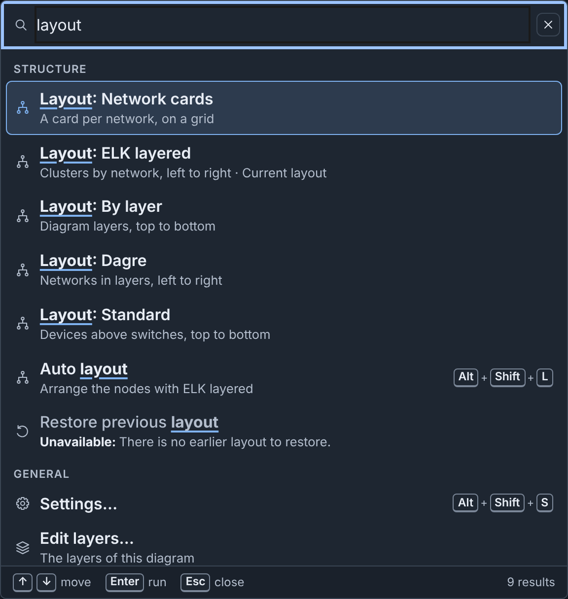
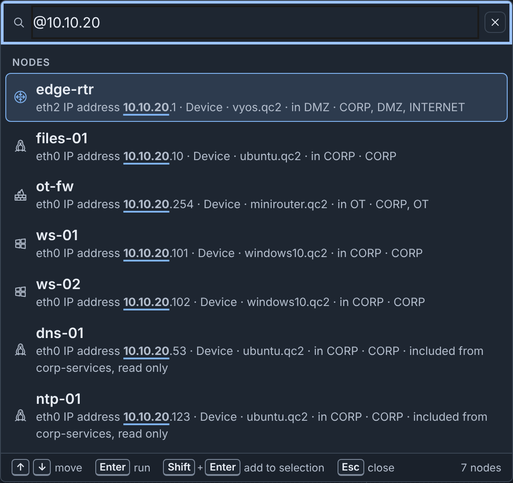
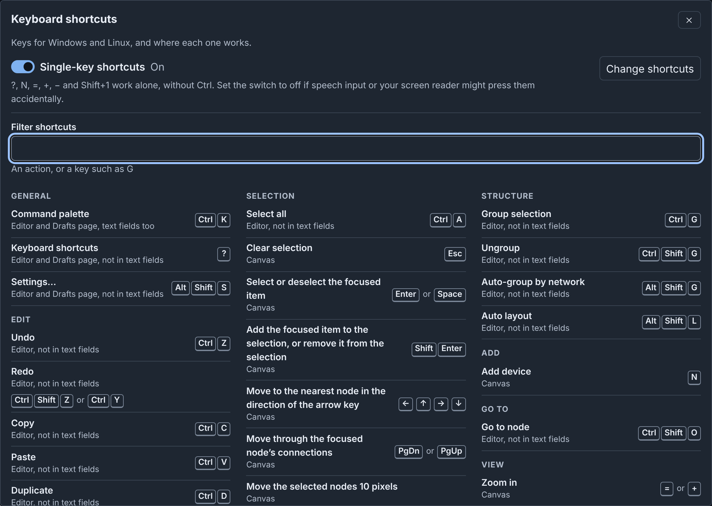
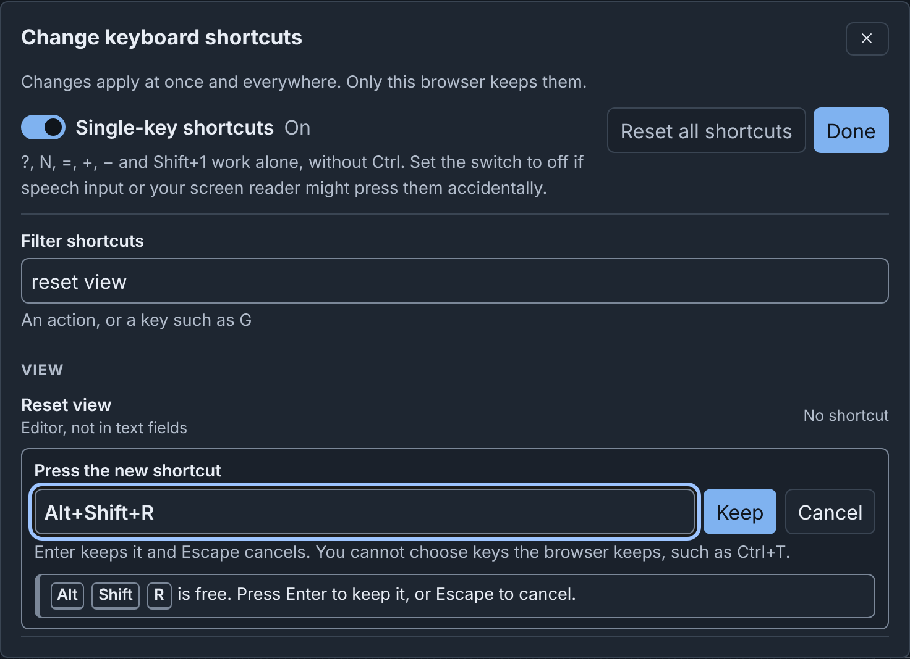

Command Palette and Shortcuts: details¶
Info
This page holds every rule, limit and message of this feature. For the short guide, see The Editor.
Command palette¶
The command palette runs commands and finds nodes, networks, node templates, template collections and custom icons.

To open it, click Commands in the header, or press ⌘+K on macOS or Ctrl+K on Windows and Linux. The keys also work in text fields. The palette also works on the drafts page.
- Type words to find commands, for example
layout. - The first group holds commands for the selected items. When you open the palette, Recent shows your last commands.
- A command that does not apply says why, for example "Unavailable: There is no earlier layout to restore."
- Some commands also match another word. Type
exportto see all download formats: Download Builder JSON, Download Builder YAML, Download Topology YAML, Download PNG, Download SVG, Download draw.io and Download Gephi (GEXF). Each opens the Download diagram dialog and starts that download (see Downloading). - A command marked › has a second step. For example, Add device then lists Device and each device template. In the empty field, press ⌫ (Backspace) to go back one step.
- Type
@to find nodes (see Finding nodes). Type#to find networks by name or VLAN alias, and select a switch. - Type
t:to find node templates,c:to find template collections, andi:to find custom icons. Type?to see all prefixes. Without a prefix, the palette also shows up to three matching templates, collections and icons.
Press ↑ and ↓ to move, Enter to run, and Esc to close. On a node, Shift+Enter adds it to the selection.
Some useful commands:
| Command | Group | Function |
|---|---|---|
| Open Node Editor | Edit | Opens the Node Editor on the selected node. |
| Edit layers… | General | Opens the layers editor. On the drafts page, it shows the Layers tab. |
| Set layer of selection | Structure | Asks for a layer, or No layer, and puts each selected device and switch at it, as one step of Undo. A device with No layer goes to the layer that its fields match, if one matches. Nodes from included topologies keep their layers. |
| Select nodes on layer | Selection | Asks for a layer, and selects each node at it: the layer chosen for the node, or the layer that its fields match. |
| Select devices on network | Selection | Asks for a network, and selects each device with an interface on it. The interface connects to a switch of the network, or, with no connection, names the network in its VLAN. |
| Select devices using image | Selection | Asks for a disk image, and selects each device with a drive of that image. |
| Assign addresses | Structure | Asks for a network with a subnet, and assigns addresses on it (see Addresses of a network). |
| Add a connection…, Move to a group… | Add, Structure | Opens the dialog of the Inspector header. |
| Show or hide connections | View | Hides or shows the connections on your canvas. This browser keeps your choice. |
Finding templates, collections and icons¶
The palette finds templates, collections and icons by their names and by the fields in this table. When a field matches and the name does not, the second line shows the field, for example "Updated by: bob" or "In collection: Pumps".
| Prefix | Finds | Fields |
|---|---|---|
t: |
Node templates | Description, icon, custom icon, layer, type, hostname, image, collection ("In collection"), "Created by", "Updated by" and the source. The layer is "Layer 3" and its label, or the layer that the fields of the template match in the open diagram. The source is "Library", "Server" or "Built-in". In the editor, the source is the section of the template in Nodes & Templates, for example "This diagram". |
c: |
Template collections | Description, the names of its templates ("Template"), "Created by", "Updated by" and the source: "Library collections" or "Server" |
i: |
Custom icons | Other names ("Also named"), size, "Created by", "Updated by" and the source: "Uploaded by" and the user, or "Server" |
"Created by" is the user who added the item. "Updated by" is the user who last changed the name, the description or the content of a template or a collection. For an icon, "Updated by" is the user who renamed it. A built-in template and an item from a server collection have neither. An icon that the server added has no "Created by", and has "Updated by" only after a user renames it. An icon from before phenix kept these names shows its uploader as "Created by", and has no "Updated by".
A template adds a device in the editor. On the drafts page, it opens in the template editor. A collection opens on the Node Templates tab, and an icon opens on the Icons tab. From the editor, a collection or an icon first closes the editor.
Finding nodes¶
Type @ and some text to find nodes. The palette finds a node by its name,
and by these fields, in this order:
- Hostname
- IP address
- MAC address
- VLAN or network, with its VLAN alias
- Annotation
- Label
- Description
- Image
Name matches come first, then field matches in the order of the fields. When
a field matches and the name does not, the second line starts with the
field. An address shows its interface, for example "eth0 IP address
10.10.30.20". A label shows its kind, for example "label
role=historian". Type ? to see the fields again.

To find the historian by name:
- Press ⌘+K (Ctrl+K).
- Type
@hist. The palette shows historian-01 and the note that names it. - Press Enter. The canvas selects historian-01, and the Inspector shows it.
When you go to a node while the zoom is below 60%, the canvas zooms to 100%, or to your Zoom when a diagram opens percentage when it is larger. From 60% up, the zoom stays, and the canvas only moves the node into view. Go to network and Go to in the checks do the same.
⇧+⌘+O (Ctrl+Shift+O) opens the palette at Go to node, which lists all nodes.
Keyboard shortcuts¶
To see all shortcuts, click Shortcuts in the header, or press
? outside a text field. The sheet shows the keys of your platform.
To find an action or a key such as G, type in Filter shortcuts.

The default shortcuts:
| Action | Where it works | macOS | Windows and Linux |
|---|---|---|---|
| Command palette | Editor and Drafts page, text fields too | ⌘+K | Ctrl+K |
| Keyboard shortcuts | Editor and Drafts page, not in text fields | ? | ? |
| Settings… | Editor and Drafts page, not in text fields | ⌥+⇧+S | Alt+Shift+S |
| Undo | Editor, not in text fields | ⌘+Z | Ctrl+Z |
| Redo | Editor, not in text fields | ⇧+⌘+Z | Ctrl+Shift+Z or Ctrl+Y |
| Copy | Editor, not in text fields | ⌘+C | Ctrl+C |
| Paste | Editor, not in text fields | ⌘+V | Ctrl+V |
| Duplicate | Editor, not in text fields | ⌘+D | Ctrl+D |
| Delete selection | Canvas | ⌫ or ⌦ | Delete or Backspace |
| Rename | Canvas | F2 | F2 |
| Open Node Editor | Editor, not in text fields | ⌥+⇧+E | Alt+Shift+E |
| Select all | Editor, not in text fields | ⌘+A | Ctrl+A |
| Clear selection | Canvas | esc | Esc |
| Select or deselect the focused item | Canvas | ↩ or Space | Enter or Space |
| Add the focused item to the selection, or remove it from the selection | Canvas | ⇧+↩ | Shift+Enter |
| Move to the nearest node in the direction of the arrow key | Canvas | ← ↑ → ↓ | ← ↑ → ↓ |
| Move through the connections of the focused node | Canvas | ⇟ or ⇞ | PgDn or PgUp |
| Move the selected nodes 10 pixels | Canvas | ⇧ with an arrow key | Shift with an arrow key |
| Resize the selected group, note, shape or icon 10 pixels | Canvas | ⌥+⇧ with an arrow key | Alt+Shift with an arrow key |
| Group selection | Editor, not in text fields | ⌘+G | Ctrl+G |
| Ungroup | Editor, not in text fields | ⇧+⌘+G | Ctrl+Shift+G |
| Auto-group by network | Editor, not in text fields | ⌥+⇧+G | Alt+Shift+G |
| Auto layout | Editor, not in text fields | ⌥+⇧+L | Alt+Shift+L |
| Add device | Canvas | N | N |
| Go to node | Editor, not in text fields | ⇧+⌘+O | Ctrl+Shift+O |
| Zoom in | Canvas | = or + | = or + |
| Zoom out | Canvas | − | − |
| Fit diagram to view | Canvas | ⇧+1 | Shift+1 |
| Show or hide connections | Editor, not in text fields | ⌥+⇧+C | Alt+Shift+C |
| Focus mode | Editor and Drafts page, text fields too | ⇧+⌘+F | Ctrl+Shift+F |
| Save now | Editor, text fields too | ⌘+S | Ctrl+S |
"Not in text fields" means that the keys do nothing while focus is in a text field, or in a field of the Inspector. On the drafts page, Settings… and Keyboard shortcuts also work while focus is on a card checkbox or on Select all.
N on the canvas adds a plain Device in the visible part of the canvas, and moves focus to it. In a published diagram, N adds nothing.
On a Mac keyboard without these keys, ⇟ and ⇞ are Fn with ↓ and ↑. ↖ and ↘ (Home and End) are Fn with ← and →. ⌫ is Delete and ⌦ is Forward Delete.
Other commands, such as Reset view, have no keys until you set some (see Customizing shortcuts). The tooltips, the palette and the sheet show your keys.
Keys on the canvas¶
The diagram is one Tab stop. The canvas keys of the table work on the canvas, its nodes and its connections, but not on the zoom buttons. These details are not in the table:
- From the canvas itself, the arrow keys go to the node nearest the middle of the view.
- When the focused node shows its info tooltip, the first Esc closes the tooltip, and the second clears the selection.
- Delete deletes the focused item, or the full selection when the focused item is in it.
- With Alt+Shift (⌥+⇧), → and ↓ make the item larger, and ← and ↑ make it smaller.
- A second Shift+1 (⇧+1) restores the view from before the fit.
- While the connections are hidden, the arrow keys go only to nodes. PgDn and PgUp say "Connections are hidden." with the keys that show them.
In a published diagram, you can select and copy items, but you cannot change them. For keyboard and screen reader use, see Accessibility.
Single-key shortcuts¶
?, N, =, +, − and ⇧+1 work without ⌘ or Ctrl. If speech input or your screen reader can press them by mistake, disable Single-key shortcuts in the sheet or in Settings. The palette and the buttons still run those commands.
Customizing shortcuts¶
You can give any command other keys, or no keys. For example, to run Reset view with ⌥+⇧+R (Alt+Shift+R on Windows and Linux):
- Click Shortcuts in the header.
- Click Change shortcuts. The sheet changes to Change keyboard shortcuts, and lists all commands.
- In Filter shortcuts, type
reset view. - On the Reset view row, click Change. The row says "Press the new shortcut".
- Press ⌥+⇧+R. The row shows the keys and says that they are free.
- Press Enter, or click Keep.
- Click Done, then close the sheet.

When another command uses the keys, the row says so, for example that ⌘+G "already runs Group selection". To move the keys to this command, click Use for and the command name, for example Use for Reset view. Or press other keys. You cannot choose keys that the browser keeps, such as ⌘+T.
Each changed row has Remove (no keys) and Reset (its default keys). Reset all shortcuts resets all commands to their default keys. The browser keeps your keys after you log out.